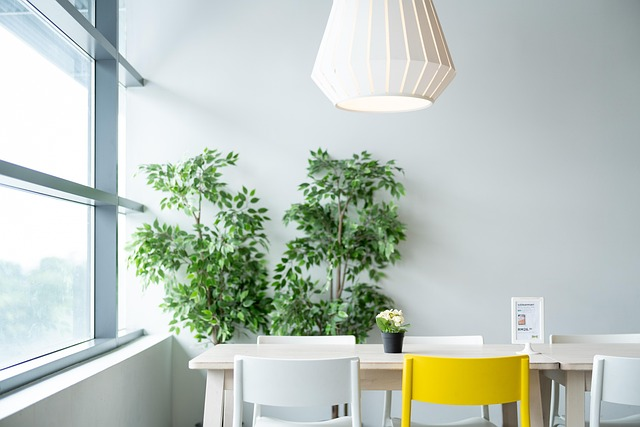
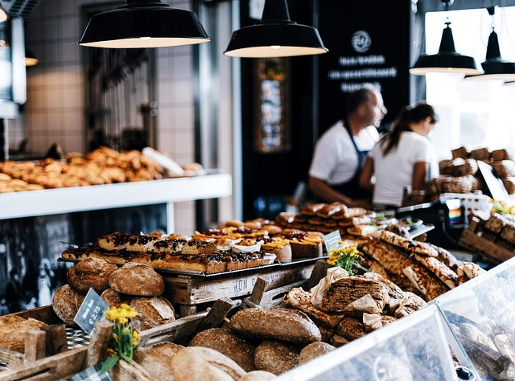
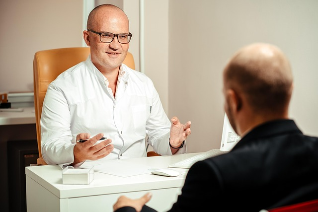
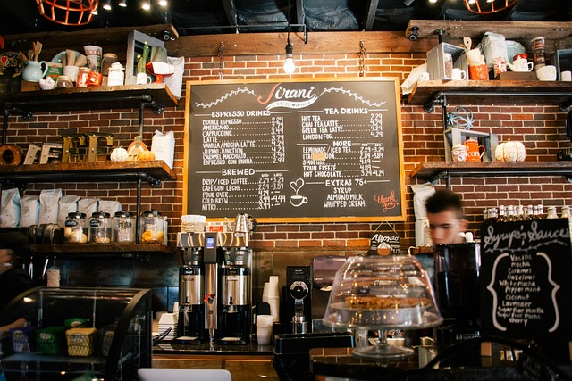
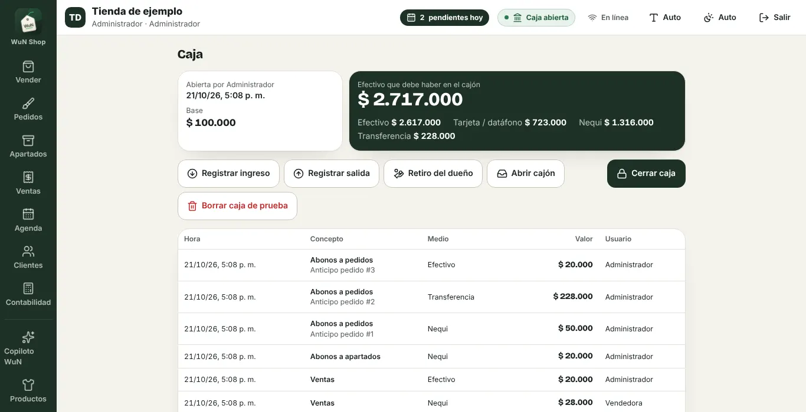

Software a la medida
Web, PWA y apps para celular que reemplazan hojas de cálculo y programas viejos.
WuN · What U Need · Bucaramanga, Santander
Somos una empresa de software. Entendemos tu proceso y lo ponemos a trabajar: sistemas de caja, contenido con IA, automatizaciones y trámites en línea que tu equipo sí usa.



Toca la que necesitas y te llevamos directo. Todas comparten la misma base: datos protegidos, soporte cercano y todo por escrito.
Para tiendas, restaurantes, panaderías y barberías. Funciona aunque se vaya el internet.
Ver WuN Negocios →
Reels, historias, menús y un plan de contenido mensual para que tu marca venda más.
Ver el Impulsador →Agendamiento por WhatsApp y voz, recordatorios, resultados protegidos y sistemas propios de gestión.
Hablemos de tu clínica →Puerta única de trámites en línea y seguimiento de obras, con el código a nombre de la entidad.
Ver WuN Gobierno →Para los que quieren el detalle técnico. Si tu proceso se puede hacer con software, lo evaluamos.
Web, PWA y apps para celular que reemplazan hojas de cálculo y programas viejos.
Caja, inventario, fiados y reportes. Factura electrónica con proveedor autorizado.
Conectamos tus sistemas por APIs y WhatsApp Business para que los datos viajen solos.
Asistentes por voz y WhatsApp que responden, agendan y avisan, con revisión humana.
Lo que necesitas ver para decidir, calculado solo y al día.
Sitios rápidos, tiendas en línea y catálogos con pedido por WhatsApp.
Datos personales según la Ley 1581 de 2012, accesos controlados y respaldos.
Tu equipo aprende a usarlo con guías sencillas y acompañamiento.
IA y contenido
Piezas hechas por WuN. Los personajes de estos videos fueron creados con IA.
El problema que te quita tiempo, y lo que hacemos para que deje de pasar.
Lo evaluamos en el diagnóstico gratis y te decimos cómo lo resolveríamos.
Pantallas reales de WuN para negocios, con datos de ejemplo.


Agentes de IA que trabajan supervisados por personas: más rápido y con control.
Entendemos tu proceso y lo que de verdad te duele. Gratis.
Qué vamos a hacer, en cuánto tiempo y cuánto cuesta, por escrito.
Avances cada semana para que veas y ajustes antes de terminar.
Capacitación, documentación y acompañamiento después de entregar.
Un equipo de Bucaramanga que crece por etapas, según cada proyecto.
Fundador y director de WuN
Estudiante de Ingeniería de Inteligencia Artificial (UDES). Producto, diseño y automatización de procesos con IA para negocios, salud y gobierno.
Cofundador · líder técnico de WuN Gobierno
Más de tres años digitalizando trámites ciudadanos de servicios públicos. Lidera la arquitectura y la ejecución técnica de los proyectos con entidades públicas.
Lo que puedes exigirnos en cada proyecto.
Cuéntanos y te decimos, sin costo, cómo lo automatizaríamos. Negocios, clínicas, laboratorios y entidades.